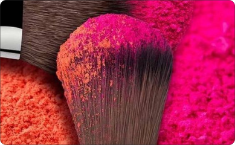
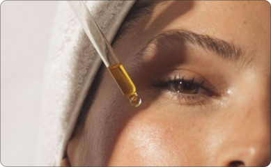

Explora las tendencias de maquillaje para este otoño, desde tonos tierra hasta atrevidos acentos de color.
Descubre cómo estos estilos pueden transformar tu look diario y celebrar la estación con elegancia y creatividad.

Todo sobre colorimetría
Descubre los secretos de la colorimetría en el maquillaje y cómo elegir los tonos que mejor complementan cada tono de piel.
Aprenderás técnicas para aplicar color de manera efectiva, usando el círculo cromático para realzar la belleza natural y crear looks impresionantes.

Top 10 productos de skincare
Explora nuestro listado del top 10 de productos de skincare esenciales para este año, seleccionados por su eficacia y popularidad.
Desde limpiadores suaves hasta sueros innovadores, descubre cuáles son los productos imprescindibles para mantener una piel radiante y saludable.
Pasos imprescindibles en tu rutina de skincare
Descubre los pasos imprescindibles para una rutina de skincare efectiva que promueve una piel sana y radiante.
Desde la limpieza profunda hasta la hidratación y protección solar, aprende cómo cada etapa contribuye a mantener el bienestar y la belleza de tu piel a largo plazo.